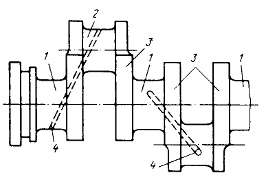
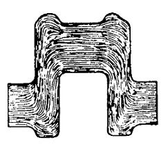
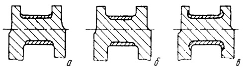
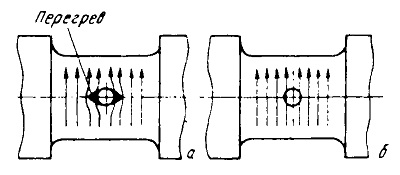
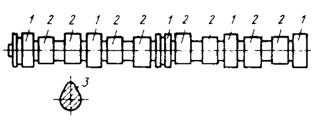

Коленчатые и распределительные валы являются нагруженными деталями и технология их упрочнения имеет ряд особенностей.
Работоспособность коленчатых валов определяется износостойкостью шатунных и коренных шеек и способностью противостоять усталостным разрушениям при циклических изгибающих нагрузках.
Коленчатые валы выпускают из среднеуглеродистых сталей с упрочнением шеек поверхностной закалкой при индукционном нагреве. Для изготовления валов используют стали 45, 50, 45Г2, 45ХН и т.п. Заготовки получают путем горячей штамповки, что обеспечивает благоприятное расположение волокон металла.
После штамповки для улучшения обрабатываемости резанием и подготовки структуры к закалке ТВЧ проводят нормализацию. Режимы нагрева выбираются в зависимости от марки. Твердость после нормализации не должна превышать 163–197 НВ. Качество нормализации контролируется по твердости и выборочно по микроструктуре. Для устранения деформации при нагреве коленчатые валы устанавливают в подвешенном состоянии в шахтные печи или в агрегаты с подвесной садкой.
Целесообразно использование тепла от ковочного нагрева, но для измельчения зерна от температур штамповки (1050–1100 °С) их нужно охлаждать до 600 °С, чтобы обеспечить распад аустенита по перлитному механизму.
После механической обработки шейки валов упрочняют поверхностной закалкой ТВЧ либо поочередно, либо одновременно. Так как при поверхностной закалке в переходной зоне от закаленного слоя возникают растягивающие напряжения, то нужно чтобы максимум этих напряжений не совпадал с галтелью коленчатого вала. На рис. 3 представлены 3 вида закаленного слоя.
На позиции (в) указана наиболее благоприятная форма закаленного слоя. Случай, когда закаленный слой охватывает галтель (в) повышает усталостную прочность в 1,5–2 раза. Вариант, приведенный на схеме (а), является недопустимым.
Для закалки применяют установки различных конструкций. Более перспективными являются станки в которых производится нагрев вращающихся шеек в петлевых индукторах. Нагрев с вращением вала обеспечивает большую однородность по глубине слоя. Обычно глубина слоя составляет 3–5 мм. Частота генератора 8–10 кГц. Мощность зависит от количества индукторов. Для получения высокой износостойкости шеек требуется обеспечить получение в поверхностном слое мартенситной структуры, но на практике из–за опасности появления трещин и корабления условия охлаждения смягчают, получая твердость поверхности 52–54 HRC. Большую опасность представляет образование трещин у маслоподводящих отверстий. Они возникают в следствие перегрева кромок из–за повышения плотности тока около отверстий. Для исключения этого делают притупляющие фаски в отверстиях или устанавливают медные заглушки (рис. 4).
При термической обработке с закалкой коленчатых валов наблюдается деформация и последующая правка не всегда обеспечивает размерную стабильность как при хранении, так и при эксплуатации.
Для упрочнения крупных валов с диаметром шейки 150–300 мм, которые изготовляют из сталей типа 18Х2Н4ВА, 38ХН3ВА или 38ХН3МА, применяют азотирование. Азотирование имеет следующее преимущество: высокая износостойкость и усталостная прочность. Недостаток – высокая стоимость и большая длительность процесса.
Номенклатура чугунных валов разнообразна – от малых до весьма крупных, массой 700–1300 кг, длинной до 2–3,5 м и диаметром шеек 200–250 мм. Их изготавливают из высокопрочного чугуна типа ВЧ50–2 или легированного серого чугуна. Эти чугуны не регламентированы по легирующим элементам и содержат, примерно, 3,4–3,6 %С, 1,9–2,2 %Si, 0,7–1,0 %Mn, 0,04–0,08 %Mg, 0,03 %S и 0,1 %P.
Основные преимущества – литье в оболочковые формы и возможности повышения их прочности за счет придания форм, благоприятной по распределению напряжений. Наличие графита обеспечивает высокую износостойкость при более низкой твердости, чем у стальных валов. Крупные валы подвергают нормализации при 880–900 °С. Иногда с последующим высоким отпуском 720–740 °С. После такой обработки получаем зернистый перлит и шаровидный графит. Шейки чугунных коленчатых валов автомобильных двигателей подвергают поверхностной закалке путем индукционного нагрева. После закалки проводят низкий отпуск при 180–200 °С. Затем проводят 100 % контроль валов на наличие трещин.
Распределительные валы двигателей служат для привода клапанов. Кулачки распределительных валов взаимодействуют с толкателями клапанов, а опорные шейки вращаются в подшипниках скольжения.
Для повышения качества индукционного нагрева используют разнообразные конструкции индукторов. В виду большой длины валы склонны к искривлению при закалке, поэтому перед закалкой их правят, а при закалке принимают меры по ограничению деформации. При не большом объеме производства используют установки с вертикальным расположением вала. Поочередное закаливание шейки и кулачков происходит путем прохождения через индуктор и спрейер.